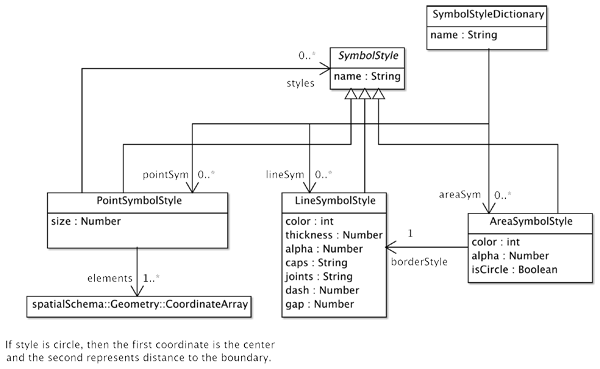
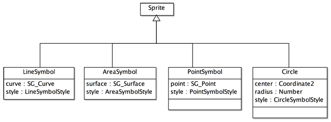
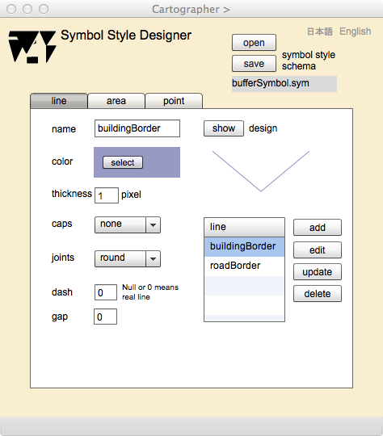
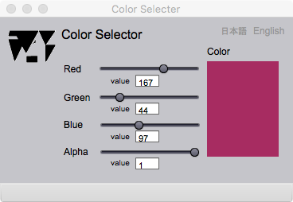
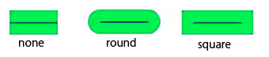
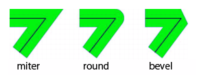
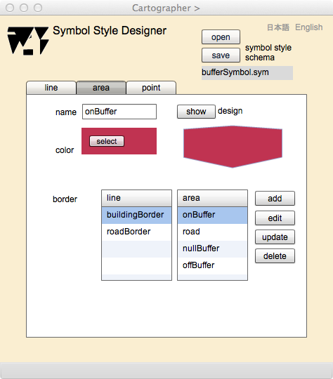
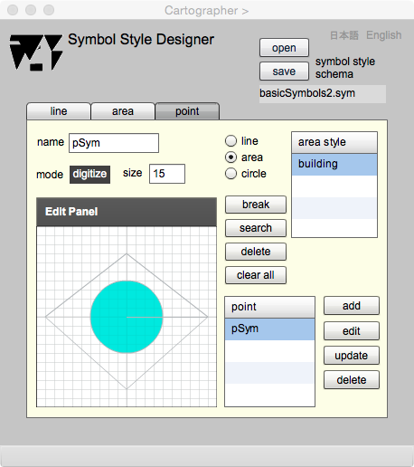

Symbol Style Designer
Map symbol is a graphic representation of a feature on a map. A symbol is designed in accordance with a symbol style, and it is classified into point, line and area. A symbol style is a rule to specify graphic attributes of a symbol, and to indicate association with other symbols, which are parts of the symbol. The symbol style schema defines the types of symbol styles. This page explains what is the Symbol Style Schema, how to create symbols on a map according to the symbol schema, and how to use Symbol Style Designer.
Symbol style schema

Figure 1. Symbol style schema used by gittok
CLASS
SymbolStyleDictionary
Symbol style dictionary is a class to represent collections of point, line and area symbol styles. It has a name of the dictionary (name) as its attribute, and association to pointSymStyles, lineSymStyles, and areaSymStyles. an instance of this type is the symbol style dictionary.
SymbolStyle
This class is the root class of symbol styles. This abstract class has a name as its attribute. This class is associated by pointSymbolStyle. It means that a pointSymbolStyle has other symbol style classes as parts.
LineSymbolStyle
This class defines attributes of a line. They are color, thickness, transparency (alpha), edge shape (caps), vertex shape (joints), solid part length of a dashed line (dash), interval part length of a dashed line (gap). Dash and gap are optional.
AreaSymbolStyle
This class defines attributes of an area. They are filling color (color) and transparency (alpha), The boundar style is defined by a line symbol style.
PointSymbolStyle
This class defines a style of a point symbol by coordinate arrays (elements) corresponding with line and area symbol styles. A coordinate array corresponding to an area symbol style shall be closed. Its interior is filled by the area symbol style. According to the Figure 1, point symbol style may have associations with other symbol styles. Actually, associations with line and area symbol styles are possible. However, it is impossible to associate with other point symbol style now.
CircleSymbolStyle
This class defines a circle as a sub-class of AreaSymbolStyle. There is no special attribute, but a style of coordinate array is different from area symbols. This is explained in detail at the next section (Symbol Schema).
ROLL NAME
pointSymbolStyles
A collection of point symbol styles.
lineSymbolStyles
A collection of line symbol styles.
areaSymbolStyles
A collection of area symbol styles.
borderStyle
a line symbol style representing a border of the area.
styles
Symbol styles used by the point symbol style.
Point symbol style may have associations with other symbol styles. Actually, associations with line and area symbol styles are possible. However, it is impossible to associate with other point symbol style now.
Symbol creation
A symbol is created from a geometric attribute of a feature in a kit in compliance with the corresponding symbol style. For example, in case a geometric attribute is a point, the symbol is created according to the point symbol style at a position of the point. The symbol is instantiated in compliance with the symbol schema.
Symbol schema
The symbol schema specifies rules for map drawing by symbols in accordance with the symbol styles. Relationship between symbol style schema and symbol schema is similar to the relationship between GFM and Instance Model. Symbol Style Schema is a meta-model and Synbol Schema is a model of symbol instances.

Figure 2. Symbol Schema used by gittok
CLASS
Sprite
This class is provided by ActionScript V3 used for the coding of gittok. It may have more than one child graphic objects and its graphic instance can be searched by a mouse on the screen. There are explanations on a web-site of Adobe and related text books. All symbols defined in gittok are defined as sub-classes of Sprite.
LineSymbol
This class defines a line symbol. It has a coordinate array that is modified by a line symbol style. Gittok portrays a line symbol as a sprite on the screen using these data.
AreaSymbol
This class defines an area symbol, which has a closed coordinate array and a style for graphic representation. Gittok portrays an area symbol as a sprite on the screen using these data.
PointSymbol
This class defines a point symbol, which has a coordinate of a point and a style for graphic representation. Gittok portrays a point symbol as a sprite on the screen using these data.
Circle
This class defines a circle by a center coordinate, a radius of a circle, and a style for graphic representation. A point position is used as a center position on the screen. The radius is calculated bythe first coordinate and the next coordinate in the coordinate array stored in the point symbol style. It means a circle is used as a point modifier.
Symbol style designer
See the top of Figure 2 shown below．
TEXT FIELDS
symbol style schema
A file name of the symbol style schema is displayed at this field when the schema is opened or saved.
BUTTONS
open
The symbol style schema is opened.
save
The symbol style schema is saved.
日本語
今あなたが読んでいるドキュメントが表示されます．
English
You can read the tutorial written in English
Line style stack

Figure 2. Screen for the line style design
FIELDS
name (editable)
A name of the line style.
thickness (editable)
Weight of the line.
dash (editable)
Solid part length of the dashed line,
gap (editable)
Interval part length of the dashed line.
line
A list of the created line style names.
BUTTONS
show
The design the line style is shown at under of this button.
select
Color selector is appeared by this button. Color of the line style is shown when the selector is closed.

Figure 3. Page for the color selection
caps
A shape of the line edge can be selected.

joints
A shape of the vertices of the line can be selected.

add
The line style is added.
edit
The line style selected on the list can be edited.
update
The edited line style is updated.
delete
The line style selected on the list can be deleted.
Area style stack

Figure 4. Screen for the area style design
FIELDS
name (editable)
A name of the symbol is put in this filed.
color
Color selector is appeared by this button. Color of the area is filled when the selector is closed.
line
A list of the line symbol names, which are used for the boundary of an area. If this is not selected, the area style without boundary will be created.
area
A list of created area symbol styles are shown. You shall select one of areas before editing, updating and deleting.
design
A sample of an area is displayed by pushing 'show' button.
BUTTONS
show
The design the area symbol is shown at under of this button.
select
Color selector is appeared by this button. Color of the area is filled when the selector is closed.
add
The area symbol is added.
edit
The area symbol selected on the list can be edited.
update
The edited area symbol is updated.
delete
The area symbol selected on the list can be deleted.
Point style stack

Figure 5. Screen for the area style design
FIELDS
name (editable)
A name of the symbol is put in this filed.
mode
The word in this field is 'digitize' means that the digitization is possible in the Edit panel. Meanwhile 'search' means that geometric element in the Edit panel is possible. The mode is changed by clicking 'break' button as the end of each operation.
size (editable)
Size of a symbol on the screen is assigned in this field. Default size is 100 pixels. width and height are equal.
Edit Panel (editable)
This panel is used for editing a point symbols. The procedure is as follows.
1. The list of styles is appeared, if the geometry for input is selected from radio buttons (line, area, or circle). If the style is circle, the a area style list is appeared.
2. Select the style of a geometry from the list.
3. Click the cursor sequentially to digitize a geometric shape. In case of a circle, click the center position, and then click the boundary of a circle. Push 'break' button to indicate the end of digitizing of one geometry.
if you do not like the digitized geometry, you can eliminate it by clicking at the line (if it is a circle, then click at the boundary for elimination). Then you will see the line become thicker. Finally, push 'delete' button. You will see that the geometry is eliminated from the panel.
line style
This list shows the names of line symbol styles.This list appeares if 'line' radio button is selected.(This list is hidden from Figure 5.)
area style
This list shows th names of area symbol styles. This list appeares if 'area' or 'circle' radio button is selected.
point
This list shows th names of poiint symbol styles. Select a name if it will be edited or eliminated before click 'edit' or 'delete' button.
BUTTONS
line
The list of line styles is appeared by clicking this radio button. The digitizing of a line (polyline) is possible by the selection of the style.
area
The list of area styles is appeared by clicking this radio button. The digitizing of an area is possible by the selection of the style.
circle
The list of area styles is appeared by clicking this radio button. The digitizing of a circle is posible by the selection of the style.
break
Clicking this button declares that one geometry digitizing is finished.
search
Click this button to change from digitize mode to search mode.
delete
Click this button to eliminate a selected geometry.
clear all
Click this button to eliminate all geometries.
add
Click this button to add a symbol style in the list of point symbol styles.
edit
Click this button for editing the selected style.
update
Click this button to update the selected style. This style should be the result of editing.
delete
Click this button to eleiminate the selected point symbol style.